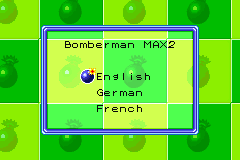

Bomberman Max 2 - Red Advance (Europe) (En,Fr,De)
EEPROM 64K
Cartridge Identity
- Game Code
AMYP(FamilyAMY)- Header Title
BMAX2-RED- Maker / Revision
7D/ rev0- ROM Size
- 16.0 MiB (16,777,216 B)
- Save Media
EEPROM 64K- SHA-256
3fff7d76166a9cc85358c16285bbb217504e3091a1180ba41e32fc4134aa8a81- Engine / SDK Group
comm-079(2 families)
Screenshots


Observed Battery Save Layout
- Fill Byte & Active Size
0xFFfill · 2,304–2,312 / 8,192 B active (entropy 2.02 bits/B)- Active Offset Ranges
0x0–0x907(1 total)- ASCII Magic / Headers
AMREBMOB,2XAM-N- Observed Variable Regions
- 8 bytes across 1 spans:
0x900–0x907 - Candidate Checksum/Counter Spans
- None
Regional Variants & Revisions (Family AMY)
- Bomberman Max 2 - Max Version (Japan) (
AMYJ, 8 MiB) - Bomberman Max 2 - Red Advance (USA) (
AMYE, 8 MiB)